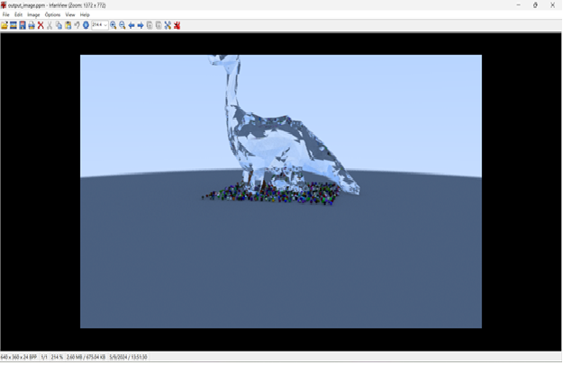

This project implements a physically based ray tracer written in C++. The renderer supports: • Diffuse and specular materials • Anti-aliasing • Depth of field camera • Shadow rays • Recursive reflections The project follows the *Ray Tracing in One Weekend* series and extends it with additional features such as improved sampling and scene configuration.
View GitHub Repository